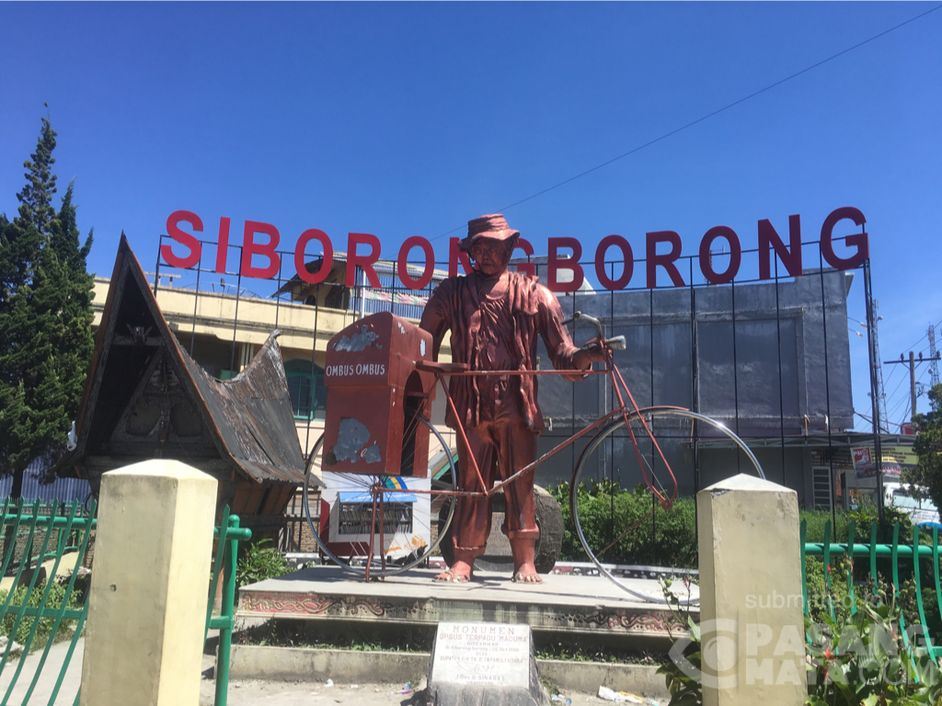
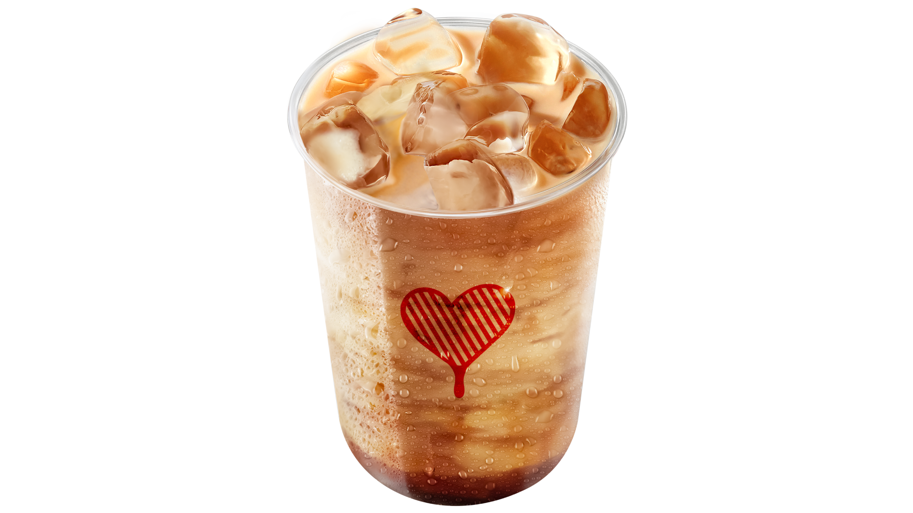
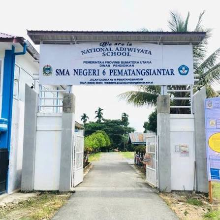
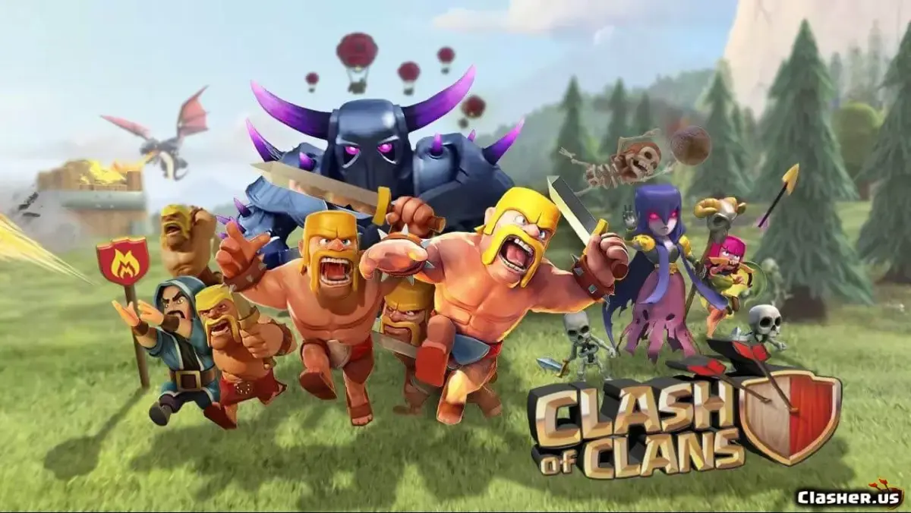
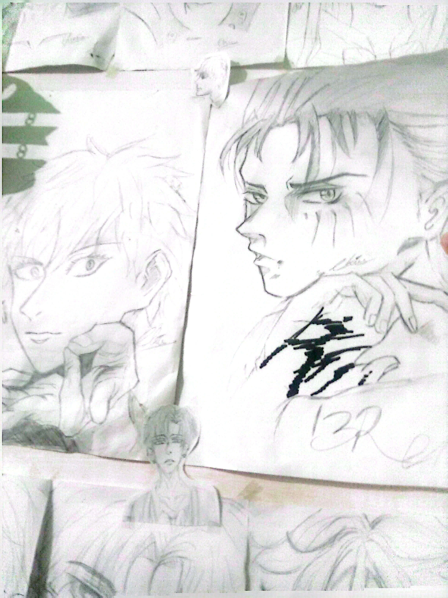

| Biodata | ||
|---|---|---|
| Keterangan | Gambar | |
| Daerah Asal | Siborong-borong |  |
| Hobi | Tidur | |
| Makanan Kesukaan | Mie Pangsit Siantar(harus siantar yang lain kurang enak sooalnya) | |
| Minuman Kesukaan | Kopi Kenangan Mantan(ini mantan terindah kali ya) |  |
| Asal Sekolah | SMA Negeri 6 Pematang Siantar |  |
| Game Favorit | COC(tapi bukan Class of Champions) melainkan (Clash of Clans) |  |
| Hal yang bisa dibanggakan(menurutku) | Bisa mengambar sikik |  |